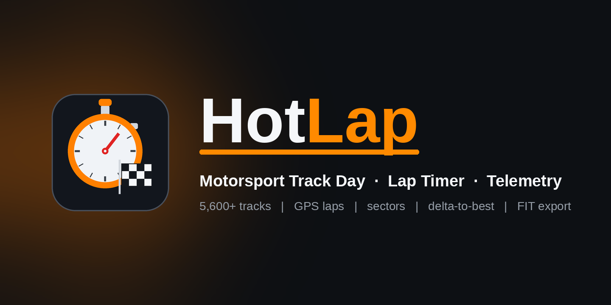

Lap timing, a live predictive delta bar, real sectors, pit-lane timing & full telemetry — on your wrist.
Free to try · 3 laps per session · one-time $6.99 unlock, no subscription
HotLap is a purpose-built lap timer and data logger for track days, HPDE, autocross, karting, motorcycling and club racing — plus touring on snowmobile, ATV, boat, jet ski or trail. Recently expanded with a 2,300+ circuit database, real sector and pit-lane timing, a live predictive delta bar, and more precise GPS crossings.
Position (start/finish line), Distance (auto every set distance), or Manual (tap). Live delta-to-best, predicted, best & theoretical best.
Pick your track and it sets the start/finish, sector boundaries, line width and pit lane for you — layout and direction variants included.
A live predictive meter that runs green as you gain on your best lap and red as you lose — readable in a blink while you drive.
Live splits versus your best on the circuit's actual sector lines, with per-lap sector times saved to the activity.
Detects pit entry/exit, tags your in- and out-laps, times the stop, and won't count a phantom lap when you pass start/finish on pit road.
Interpolates line crossings between the 1 Hz GPS fixes so fast passes are timestamped exactly — with optional multi-band GNSS for the tightest fixes.
GPS-derived lateral & longitudinal G with maxima, speed, HR, temperature, elevation, SpO2 and respiration.
Syncs to Garmin Connect with the GPS track and rich custom fields — export the FIT for third-party tools, including a VBOX converter for Circuit Tools.
Pick which screen you land on when a session starts, and page up/down between the rest.
The details that keep timing clean when it counts.
Once you're set up, HotLap starts recording as soon as you're moving — so a forgotten Start doesn't cost you a run.
Timing waits for your first start/finish crossing, so Lap 1 is a clean flying lap instead of a pit-out lap.
Run a track backwards and it flags it and hides the out-of-order splits — your lap times still record.
Built to run hour after hour: memory stays in check through long sessions while every lap is saved to the activity.
Safety: HotLap is a timing and data tool for use on closed courses, private property, and other appropriate venues. Don't interact with your watch while operating a vehicle or other motorized device — keep your eyes up and hands on the controls. Always obey traffic and venue rules and operate within your abilities. Use at your own risk.